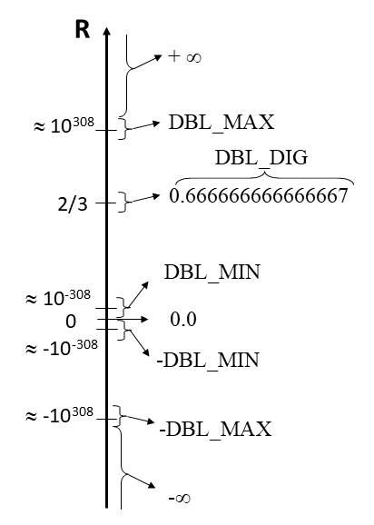

flowchart LR
B{expression != 0} -->|true| C[statement_true]
B -->|false| E[statement_false]
Basics of C
Outline
Day 1
Introduction
- Motivation
- Context
- Course overview
Jumping in
- Hello, world
- Temperature conversion
- Logistic map
Day 2
Basics of C
- Types and operators
- Control flow
- Functions
Day 3
Advanced C
- Arrays and pointers
- Structures
- Input and output
Day 4
Beyond the core of C
- External libraries
- Segmentation faults
- C standards
Wrapping up
Data types, operators and expressions
Data types, operators and expressions 1 2
- Variables are the basic data objects manipulated in a C program
- C is statically typed: a variable is of a specific type defined at compile time
- C allows manipulation of variables by expressions with operators
The very basics
- C statements 3 end with a semicolon
- Braces
{}are used to group statements into a code block - Whitespace is mostly ignored, allows to improve readability
- Compiler ignores what comes after
//and between/*and*/
int a = 10;
if (a > 0) {
b = 2; // Single-line comment
c = 3;
}
/* Multi-line
comment */Names of data objects in C
- are case sensitive
- consist of
{A,...,Z,a,...,z,_,0,...,9} - start with
{A,...,Z,a,...,z,_} - can have any length, but at most:
- variables: 31 significant, 64 for C99+
- functions: 6 significant4, 32 for C99+
- cannot be reserved words such as
if,while,char,int, …
Conventions for names
- variables, functions: start with lowercase
- constants, type names: start with uppercase or fully capitalized
- names reflect semantics of entity!
- variables with very small scope have a short name
- camelCase (e.g.,
nrOfRuns) or underscoresnr_of_runs
Tip
Try to be consistent within a project. If you might share code with others, try to stick to a generally accepted code style, e.g. the GNU coding standard
Overview of data types
char: single characterint: integer, allows qualifiers (signed,long, …)float/double/long double: real numbersenum: list of constantsstruct: structure, group of related variables
Characters
- a
charholds 1 character of the local character set - usually 1 byte, check with the
sizeofoperator - limits are defined in
limits.hheader asCHAR_MINandCHAR_MAX charcan be signed or unsigned- almost always irrelevant, just use
char
- almost always irrelevant, just use
- Example:
char myChar = 'b';"b"is a string (=array of chars)!
Special characters are escaped with \
'\a': bell'\n': new line'\r': carriage return'\t': horizontal tab'\\': backslash'\'': single quote'\"': double quote'\0': null character (terminates strings)
Strings?
Strings?
- String constants are terminated with
\0internally- Allows to know where string ends
- You do not need to know this if you use functions from the standard library to work with strings
Integers
int: typically 4 bytes, offers \(2^{32}\) distinct values- modifiers:
unsigned int: only non-negative integers, natural for array indicesshort int/long int/long long int: different ranges compared to plainint, can be combined withunsigned
Tip
The range of int can be a limitation in practice, think about the range you need and choose the appropriate type.
Fixed-size integers
The C standard only imposes a minimal range for integers:
- For example,
intshould at least cover \([−32767, +32767]\) - Some platforms provide larger range => code is potentially platform dependent
If you need a fixed range:
- Include the
stdint.hheader - Use
uint8_t,int16_t, …, which provide exactly the specified number of bits
Real numbers
- Real numbers are represented in a computer in a format very similar to exponential notation7
- Computer uses binary representation, e.g., the IEEE SP standard:
- Exponent determines range
- Mantissa determines precision


Double precision

- a
doubleis usually 8 bytes and gives about 15 decimal digit precision - the
float.hheader provides:DBL_MAX: largest positivedoubleDBL_MIN: smallest positivedoubleDBL_EPSILON: difference between1.0and next representable value (\(\approx\) machine precision)BLD_DIG: number of significant decimal digits
Basic floating-point representations
double: most often used in sciencefloat: half the number of bits compared todouble, usually 7 decimal digit precisionlong double: usually larger range thandouble, not used often
Note
In deep learning, reduced-precision formats (FP16, FP8) are often used. Only dedicated devices like GPUs give hardware support.
Enumeration
enummakes it convenient to refer to constants symbolically- Using automatic integer numbering:
enum Level = {LOW, MEDIUM, HIGH};
enum Level myLevel = MEDIUM; // myLevel will be 1- Using custom values:
enum Pieces = {King = 'K', Queen = 'Q', Rook = 'R', Bishop = 'B', Knight = 'N'};
enum Pieces myPiece = Bishop; // myPiece will be 'B'Type conversion
- In constants, use suffix, e.g.
123456789Lis along int - In expressions, automatic conversion to largest type, e.g.
5/9.0is interpreted as5.0/9.0 - Explicit casting with brackets, e.g.
(int) 5.3- this evaluates to the integer 5, so information is lost
Accidental type conversion
- What do you expect the following code will do?
#include <stdio.h>
#include <stdlib.h>
int main() {
double a = -1.6e12;
if (abs(a) > 0) printf("abs(a) is greater than 0\n");
else printf("abs(a) is smaller or equal to 0\n");
}- Behaviour is unexpected?
$ gcc conversion.c -o conversion && ./conversion
abs(a) is smaller or equal to 0Accidental type conversion
- Compilation with
-Wconversionflags provide a hint
$ gcc -Wconversion conversion.c -o conversion
conversion.c: In function ‘main’:
conversion.c:6:13: warning: conversion from ‘double’ to ‘int’ may change value [-Wfloat-conversion]
6 | if (abs(a) > 0) printf("abs(a) is greater than 0\n");- The
absfunction is forint,double awas silently converted - Solution: use the
fabsfunction
#include <stdio.h>
#include <math.h>
int main() {
double a = -1.6e12;
if (fabs(a) > 0) printf("abs(a) is greater than 0\n");
else printf("abs(a) is smaller or equal to 0\n");
}Variable declaration
- C is statically typed, each variable has to be declared with type information:
int a, b; - Can be combined with an assignment, but no automatic initalization:
double x = 3.2, y;double z = sqrt(2.0);
- Constants cannot be modified during runtime, must be assigned on declaration:
const int MINUTESPERHOUR = 60;- Convention: names of constants are capitalized
Booleans
- The original C89 standard does not have a boolean type
- true: non-zero integer, non-NULL pointer
- false: zero, NULL pointer
- The C99 standard adds the
booltype andtrue/falsekeywords (after including<stdbool.h>) - The C23 standard provides booleans by default
- You can get by with the C89 approach, dedicated
booltype might be somewhat more efficient in some cases
Exercise: data type sizes
Goal:
- Print information about sizes and ranges of several types
Learning outcomes:
- Understand C data types
Instructions:
- Extend the program provided in
exercises/04_data_type_sizesto print information about more types and ranges - Explain the relation between sizes and ranges
Exercise: data type sizes solution
Code:
printf("The size of int is %zu bytes; it ranges from %d to %d\n",
sizeof(int), INT_MIN, INT_MAX);
printf("The size of unsigned long int is %zu bytes; its max is %lu\n",
sizeof(unsigned long int), ULONG_MAX);Output:
The size of int is 4 bytes; it ranges from -2147483648 to 2147483647
The size of unsigned long int is 8 bytes; its max is 18446744073709551615- 4 bytes = 32 bits:
intis in \([-2^{31}, 2^{31}-1]\) - 8 bytes = 64 bits:
unsigned long intis in \([0, 2^{64}-1]\)
Exercise: data type sizes solution
Code:
printf("The largest double that can be represented is %6.1e\n", DBL_MAX);
printf("The smallest positive double that can be represented is %6.1e\n", DBL_MIN);
printf("The machine epsilon is %6.1e\n", DBL_EPSILON);
printf("The number of digits is %d\n", DBL_DIG);Output:
The largest double that can be represented is 1.8e+308
The smallest positive double that can be represented is 2.2e-308
The machine epsilon is 2.2e-16
The number of digits is 15- Exponent has 11 bits -> in range [-1023,1024] -> \(2^{1024} \approx 10^{308}\)
- Mantissa has 52 bits -> 52 significant digits in binary -> \(52 \log_{10} 2 \approx 15.6\)
Operators
Overview of operators
- arithmetic operators
- relational operators
- logical operators
- bitwise operators
- assignment operators
- incremental operators
- conditional operator
Arithmetic operators
- addition, subtraction:
+,- - multiplication, division:
*,/- integer division truncates fractional part,
5/9equals0
- integer division truncates fractional part,
- modulo (only for integers):
% *,/,%take precedence over+and-
Tip
Use brackets for clarity instead of relying on precedence rules
Relational operators
- order:
- smaller, smaller or equal:
<,<= - larger, larger or equal:
>,>=
- smaller, smaller or equal:
- equality:
- equal to, not equal to:
==,!=
- equal to, not equal to:
Tip
Be careful when comparing doubles, e.g. pow(sqrt(5.0), 2) == 5.0 is false!
Logical operators
- logical and, logical or:
&&,||- evaluated left to right with early stopping,
(i < N) && (a[i] > 0)will not accessa[i]unlessi < N
- evaluated left to right with early stopping,
- unary negation
!- converts non-zero operand into 0 and zero operand into 1
- zero is false, non-zero is true
Increment/decrement operators
- C specific shorthand notation
- increment:
i = i + 1;is the same asi++;or++i; - decrement:
i = i - 1;is the same asi--;or--i;
- increment:
- post/pre increment matters when value is used, for example in assignment:
int j = ++i;: first incrementi, then assign it tojint j = i++;: first assignitoj, then incrementi
Note
The name C++ can be interpreted as “incremented C”
Bitwise operators
Manipulate bits of integers (signed and unsigned char, int, long, …)
- Bitwise and, or, xor:
&,|,^0011 & 0101->0001
- Shift bits left, right:
<<,>>0111 1000 >> 2->xx01 1110- x is zero if unsigned, undefined otherwise
- One’s complement:
~~1101->0010
Tip
Bitwise operators are powerful, but also tedious. Use with care!
Assignment operators
- Simple assignment is done with
=(do not confuse with comparison==) - Assignment operators allow to compress statements:
i = i + 2;is the same asi += 2;- Most binary operators have a corresponding assignment operator
- More concise, but often more intuitive as well
Conditional expression
Conditional expression is a ternary operator condition ? expr_true : expr_false
- Evaluate the
condition- If true, evaluate
expr_trueas the result - If false, evaluate
expr_falseas the result
- If true, evaluate
// z = max(a, b)
if (a > b) {
z = a;
} else {
z = b;
}
// same thing but shorter
z = (a > b) ? a : b;Precedence and associativity
- K&R provide a table with precedence rules (2.12)
- Make your code readable and maintable by using brackets
- C does not specify order of evaluation for most operators:
- order can even depend on compiler options
x = f() + g();might evaluategbeforef- important if
galters variable used byf
- important if
a + b + c;could be(a + b) + cora + (b + c)- floating-point arithmetic does not preserve mathematical associativity
Exercise: operators
Goal: Solve a few operator-related programming questions Learning outcome: Understand the basics of C operators Instructions: See exercises/05_operators
Tip
This exercise uses the assert() function to check your solution. This function can be useful for debugging, but should not be used in production code.
Tip
You can easily “cheat” the assert() statements, but that is not the intention of course.
Exercise: operators solution
Implement a function that returns if a year is a leap year: easy to achieve by combining modulo and logical operators.
int isLeapYear(int year) {
/* Return 1 if year is a leap year and return 0 otherwise
A year is a leap year if:
- it is divisible by 4 but not by 100 OR
- it is disisible by 400
*/
if ( (year % 4 == 0 && year % 100 != 0) || (year % 400) == 0) return 1;
else return 0;
}Exercise: operators solution
// Multiply i by 8 and store it in j, but without making use of the * operator
// Hint: use a bitwise operator
int i = 5;
int j = i << 3;
assert(j == 40);
// Compute c as the minimal value of a and b without using an if-else statement
int a = 126;
int b = 45;
int c = (a < b) ? a : b;
assert(c == b);Control flow
Control flow 8 9
- Control flow statements specify order in which computations are performed
- Often multiple ways to achieve the same end result
- Involves an element of personal preference
- One way might provide faster code than another
Statements and blocks
- Use
;to terminate a statement - Group multiple statements in blocks with braces
{}blocks can be nested
variables can be redeclared and have block scope
{ int i = 3; // from here, i is 3 { int i = 5; //from here, i is 5 } // from here, i is 3 again }
Tip
Use blocks to make your code more readable, unless you want to participate in the The International Obfuscated C Code Contest
if-else statement
if (expression != 0) {
statement_true;
} else {
statement_false;
}- The
elseclause is optional - For a single-line statement, braces are optional
- Indentation is only for style, but helps for readability
if (expression)is the same asif (expression != 0)
else-if statement
if (expression1) {
statement1;
} else if (expression2) {
statement2;
} else {
statement3;
}flowchart LR
B{expression1} -->|true| C[statement1]
B -->|false| E{expression2}
E -->|true| F[statement2]
E -->|false| G[statement3]
- General way to write a multi-way decision
- The
elseclause is optional
Switch
switch (expression) {
case const-expr1: statements1
case const-expr2: statements2
default: statements3
}- Multi-way decision to branch based on comparison with constant integer values
- Fall through: execution goes to next case
- You can leave a
switchwithbreakorreturn
- You can leave a
- Case expressions must be constant and unique
defaultis optional
Switch example
// Count occurrence of odd and even digits in a string
switch (c) {
case '0': case '2': case '4': case '6': case '8':
neven++;
break;
case '1': case '3': case '5': case '7': case '9':
nodd++;
break;For loop
// General for loop
for (expr1; expr2; expr3) {
statements;
}
// Most common usage
for (int i = 0; i < N; i++) {
statements;
}expr1: executed once at start, typically for initializationexpr2: evaluated at start of each iteration, for loop stops if falseexpr3: evaluated at end of each iteration
For loop
- Should be used when number of repetitions is known or computed
- Each expression is optional,
for (;;) {}is an infinite loop breakin loop body terminates loopcontinuein loop body goes to next iteration
While loop
// General while loop
while (expression) {
statements;
}
// Check if str contains c
while (i < strlen(str) && !found) {
if (str[i] == c)
found = True;
else
i++;
}statementsare executed zero or more times, as long asexpressionis true- should be used when number of repetitions is unknown
Do-While loop
// General while loop
do {
statements;
} while (expression);statementsare executed at least once, untilexpressionis false- Similar to
whileloop, butexpressionis evaluated at end of iteration
Functions and Program Structure
Functions and Program Structure 10 11
- Functions break large computing tasks into smaller ones
- Help to bring structure into code
- Hide implementations details
- Make it easier to reuse existing code
Basics of functions
// General function definition
return-type function-name(type1 arg1, type2 arg2, ...) {
declarations and statements;
return expression;
} - A function can have no arguments:
int myFunction(void); - A function can return nothing:
void myFunction(int A);- No
returnstatement in body required
- No
- The compiler requires a function to be known before it can process a call
- Declare the function:
return-type function-name(type1 arg1, type2 arg2); - Declaration is promise to provide implementation later
- Declare the function:
Function examples
// The most minimal (useless) function
dummy() {}
// Compute the square of a floating-point number
double square(double a) {
return a * a;
}Return statement(s)
- A return statements returns a value (or nothing), but also returns control to the caller
- A function can have multiple return statements, but at most one is executed in each call
int index(char c, char s[]) {
unsigned i;
for (i = 0; i < strlen(s); i++)
if (s[i] == c)
return i;
return -1;
}- The returned expression is converted to function’s return type
// Valid, but dubious
int returnInt() {
double a = 5.0;
return a;
}More on functions
mainfunction is special: always the entry point of the program- C passes arguments by value, inside the function a local copy is made
- changes to values are invisible outside of function
- pointers (see Day 3) allow to circumvent limitations
- A function can only return one variable
- pack multiple values in a
struct - use pointers (see Day 3) to pass out values
- external variables (usually a bad idea)
- pack multiple values in a
Return code of main function
- The return code of
mainis passed as exit code to calling process - Convention is to return
0in case of success, non-zero otherwise - Allows chaining dependent commands, for example in bash:
&&only executes next command if previous one had exit code0
compile && execute
Return code of main function
stdlib.hdefines some macros
#include <stdio.h>
#include <stdlib.h>
int main(void)
{
FILE* fp = fopen("data.txt", "r");
if (fp == NULL)
{
fprintf(stderr, "fopen() failed in file %s at line #%d", __FILE__, __LINE__);
exit(EXIT_FAILURE);
}
/* Normal processing continues here. */
fclose(fp);
printf("Normal Return\n");
return EXIT_SUCCESS;
}External variables
- internal variable: defined inside function
- lifetime and scope limited to function call
- external variable: defined outside function
- bigger scope: globally accessible inside any function
- longer lifetime: keeps value between calls
- alternative for long list of function arguments
Tip
External variables typically make code less reusable, so generally they should be avoided
External variables example
#include <stdio.h>
int external_variable;
void someFunction(void) {
printf("In someFunction, external variable is %d\n", external_variable);
external_variable++;
}
int main(void) {
external_variable = 1;
someFunction();
printf("in main, external variable is %d\n", external_variable);
return 0;
}Value of external_variable persists:
$ ./a.out
In someFunction, external variable is 1
in main, external variable is 2Scope
The scope of a variable or function is the part of the program where the variable of function can be used
- Local variables
- From definition until end of block
- Includes function arguments
- External variables
- From definition until end of file
- Can be used in multiple files by declaring with
extern(not covered)
Header files and build systems
- So far: small programs in one
.cfile: easy to compile - Larger projects: many source files
- Order of compilation can matter because of dependencies
- Difficult to remember compilation commands (linking and flags)
- Editing one file does not require recompiling entirely
Header files and build systems
- Use header files:
.hfiles containing shared definitions and declarations#include "example.h"or#include <stdio.h>
- Use a build system (not covered here)
- Makefile (https://github.com/hpcleuven/Makefile-intro]
- CMake (https://github.com/hpcleuven/CMake-intro]
- Meson
Tip
Most exercises can be compiled by running the make command in the exercise directory
Static variables
- Internal variables with
staticdeclaration- Remain in existing across function calls
- Provide permanent private storage within a single function
unsigned uniqueIdentifier() {
// id Indicates how many times the function has been called
static unsigned id = 0;
return id++;
}Static functions
- Functions with
staticdeclaration- A static function is only visible within the file where it is declared
- A normal function is visible everywhere
- External variables with
staticdeclaration- Can only be used in file where they are declared
Initialization
- Automatic internal variables
- Without explicit initialization (such as
int x;), values are “garbage” - Initial value can come from expression:
double y = sqrt(6.0); - Re-initialized each time the block is entered
- Compiler can warn about uninitialized variables
- E.g.,
-Wuninitializedfor gcc (not perfect)
- E.g.,
- Without explicit initialization (such as
Initialization
- Static internal variables
- Guaranteed to initialize to zero
- Initialization first time it is encountered
- Expression or constant expression
- External variables
- Guaranteed to initialize to zero
- Initialized at start of execution
- Constant expression
Recursion
Functions can call themselves (i.e. recursion)
unsigned long fac(unsigned long n) {
if (n == 0 || n == 1)
return 1;
else
return n*fac(n-1);
}- Each function call has overhead (pushing frame on stack)
- Often not the fastest or lowest footprint
- Deep recursion levels can even cause stack overflow
- Often closer to mathematical description
Tip
When turning on compiler optimizations, recursive functions might be automatically converted to a loop, especially in case of tail recursion (where the recursive call is the last statement).
The C Preprocessor
A few statements are processed before compilation
#include "filename"orinclude <filename>#define name replacement- conditional inclusions with
#if,#elif,#else,#endif
In your head, do not interpret these as C code, but imagine their impact on the code presented to compiler.
The C Preprocessor
#include "myheader.h": includes content frommyheader.hin current directory verbatim#include <math.h>: includes content frommath.hin include directory verbatim- guarantees all source files have same definitions and variable declarations
The C Preprocessor
A macro substitution replaces each occurrence of a name with a replacement, for example #define max(A, B) ((A) > (B) ? (A) : (B))
- Every occurence of
max(x, y)will be replaced - Use with care, can make code more readable, but also obfuscate when reading code for the first time
- Macros avoid overhead associated with function call
The C Preprocessor
Conditional inclusion gives control over preprocessor statements
// Prevent redefinition
#ifndef FOUR_PI
#define FOUR_PI 4 * M_PI
#endif
// Use SYSTEM to decide which header is included
#if SYSTEM == SYSV
#define HDR "sysv.h"
#elif SYSTEM == MSDOS
#define HDR "msdos.h"
#else
#define HDR "default.h"
#endifVariadic functions
- C allows variable-length argument lists (variadic functions)
- The
printffunction is an example we already encountered stdarg.hheader provides utilities likeva_list,va_start,va_arg,va_end
Tip
Use sparingly, variadic functions are somewhat unconventional
Variadic functions
- Example: add variable number of integers:
#include <stdarg.h>
int add_integers(int count, ...)
{
int result = 0;
va_list args;
va_start(args, count); // count can be omitted since C23
for (int i = 0; i < count; ++i) {
result += va_arg(args, int);
}
va_end(args);
return result;
}Exercises
Compute \(\pi\) using Monte Carlo
Goal:
- Write a program that approximates \(\pi\) by using a Monte Carlo algorithm
Learning outcomes:
- Write a loop and use control flow
Instructions:
- The quarter unit circle in the first quadrant has area \(\frac{\pi}{4}\). Approximate this area by generating uniformly distributed points in \([0,1] \times [0,1]\) (
get_random_doubleis provided) and selecting points inside a unit circle - How does the estimate converge with the number of samples?
- See
exercises/06_mc_pi.
Compute \(\pi\) using Monte Carlo

Compiler optimization
- Most compilers have flags to control to which extent executable is optimized
- Examples of optimizations
- Function inlining
- Eliminating common subexpressions
- Vectorization
- Statements of source code are reordered
- Loop reordering
GCC optimization levels
-O0:- No optimization, machine code stays close to source code
- Fast compilation, but slow at runtime
- Good for debugging, never use for production runs!
-O2or-O3:- Optimize, but comply with standards
- Slower compilation, but fast at runtime
- Usually the best option for production runs
-Ofast:- Optimize and possibly ignore standards compliance
- In principle the fastest execution
- Never use without checking results!
Monte Carlo \(\pi\) timings
Compilation without optimizations:
$ gcc -O0 -o mc_pi mc_pi.c && ./mc_pi Walltime = 2.490s, 4.0e+07 iterations/s Nsamples = 100000000 Estimated pi = 3.14169792 Error = 1.0527e-04Compilation with optimizations:
$ gcc -O2 -o mc_pi mc_pi.c && ./mc_pi Walltime = 1.768s, 5.7e+07 iterations/s Nsamples = 100000000 Estimated pi = 3.14169792 Error = 1.0527e-04Main optimization in this case is probably inlining
get_random_double
Fibonacci
Goal:
- Write a program to compute the Fibonacci sequence
Learning outcome:
- Write (recursive) functions
Instructions:
- The Fibonacci sequence is defined by \({\displaystyle F_{n}=F_{n-1}+F_{n-2}}\) and \(F_0=0, F_1=1\)
- Compute the nth element by using a recursive function
- Try to trigger a stack overflow for large n
- Write a function without recursion
- See
exercises/07_recursion
Footnotes
Kernighan and Ritchie, Chapter 2, Types, operators and expressions↩︎
Adapted from https://github.com/gjbex/Scientific-C↩︎
A statement is roughly a programming instruction, something to do↩︎
guaranteed by standard, nowadays most compilers allow longer lengths↩︎
arrays are discussed later on↩︎
pointers are discussed later on↩︎
not part of the C standard, but quite universal↩︎
Kernighan and Ritchie, Chapter 3, Control Flow↩︎
Adapted from https://github.com/gjbex/Scientific-C↩︎
Kernighan and Ritchie, Chapter 4, Functions and Program Structure↩︎
Adapted from https://github.com/gjbex/Scientific-C↩︎